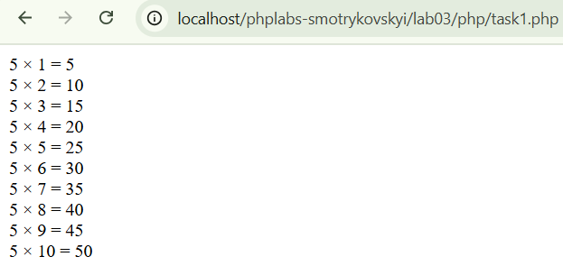
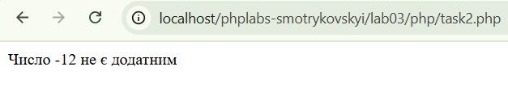

Лабораторна робота №3
Тема: Управління потоками виконання
Виконав: Смотриковський Леонід Леонідович
Група: KN1-B22
Варіант: 4
Дата виконання: 01.04.2025
Завдання
- 1. Напишіть скрипт для виведення таблиці множення числа 5 за допомогою циклу foreach і масиву.
Перейти до розв’язку

- 2. Напишіть програму, яка перевіряє, чи введене число є додатним, використовуючи тернарний оператор.
Перейти до розв’язку
